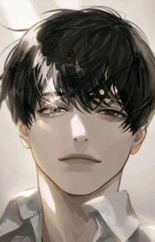
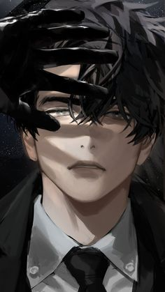
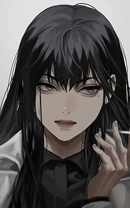

| Main Characters | Character Summary |
|---|---|
 Kim Dokja Reader |
Kim Dokja's countenance is calm and fresh, although somewhat edgy. There is a marked difference in his appearance when he smiles and when he's expressionless. He is often described as looking plain or unappealing by other characters, so much so that he gains the Incarnation modifier "Ugliest King". It is later revealed that his appearance is "censored" for those looking at him. In Dark Castle, Lee Jihye says she cannot remember what he looks like; in the 73rd Demon Realm, when footage of the 73rd Demon King scenario is being shown in the Syswitz Complex, Kim Dokja himself notices that his face is distorted onscreen. Kim Dokja is fairly expressive and has distinct mannerisms, though he may not realize it himself. He smiles mischievously and arches his eyebrows when he's teasing (generally towards Han Sooyoung). He gets a glint in his eyes when he thinks about his most loved stories. According to Shin Yoosung, his nostrils flare when he lies. He has a distinctive smile, sometimes described as "unlucky" by his party members and unique enough in nature that people recognize him by it. |
 Yoo Jonghyuk Protagonist |
Yoo Joonghyuk is repeatedly described as extremely handsome by various individuals, including the author of Ways of Survival and Kim Dokja. The latter even uses him as a measurement for others' handsomeness on multiple occasions.Yoo Joonghyuk has wide black eyes with thin double eyelids and thick eyebrows. His right eye glows golden upon activation of the skill [Sage's Eye]. Yoo Joonghyuk is normally very confident in his abilities, never backing down from a challenge and typically cutting down his enemies with ease. He is extremely talented in various areas, befitting of his status as a protagonist. He takes pride in his own skill, sometimes to the point of not perceiving anyone else's work as good, as seen when he will eat no one's cooking but his own. Yoo Joonghyuk's speech is concise and blunt, often to the point of rudeness. He becomes explicitly rude and threatening when speaking to individuals who irritate him, or who are powerful unknowns. He is sometimes also rude to his own party members, though he looks out for them nonetheless, showing that he cares despite his harshness. Frequently, he expresses himself through actions or expressions rather than words. These include habits such as dragging the tip of his sword along the ground when happy,[13] or his left eyebrow twitching upon making an serious decision. |
 Han Sooyoung Writer |
Han Sooyoung can change the appearance of her Avatar clones, causing her to wear and shed many different appearances.She is honest in claiming that she is a bad person, whose actions are all meant to serve herself rather than others. Han Sooyoung is rather detached from other people initially, such as when she easily kills Kim Dokja at his request, finding him mildly intriguing. Han Sooyoung is a very confident person, both in her looks and her talents. She is a very skilled writer and refers to herself as a genius, with evidence to show for it--before "Ways of Survival" became reality she was a hugely popular writer with a massive amount of wealth from her novels. However, her confidence occasionally gets in her way, as she becomes stubborn and takes a bit longer to admit her faults. Similar to Yoo Joonghyuk, she will berate the people she cares about even as she tries her hardest to keep them safe. She is repeatedly shown to be incredibly headstrong, with an ideal vision of the future she wants. Like Kim Dokja and Yoo Joonghyuk, she works tirelessly to reach her own desired ending, and will not accept anything less than the perfect one of her dreams, as shown by her actions in the epilogue and the 1863rd turn. |
A novel called Three Ways to Survive in a Ruined World (written by the anonymous author tls123) has been written and published over the course of a decade, and Kim Dokja is the sole reader who has followed it to its ending. When the real world is plunged into the premise of Ways of Survival, Kim Dokja's unique knowledge of the novel becomes vital to his survival. Kim Dokja allies with Yoo Joonghyuk, the protagonist of Ways of Survival, in order to change the novel's original plot and more quickly approach the end of the story. As Kim Dokja and his party members progress through the scenarios, they face increasingly difficult threats and life-or-death challenges, struggling to stay alive and work together as they aim to destroy the [Star Stream] that demands their suffering.
{kind=link}
{kind=link}
{kind=link}